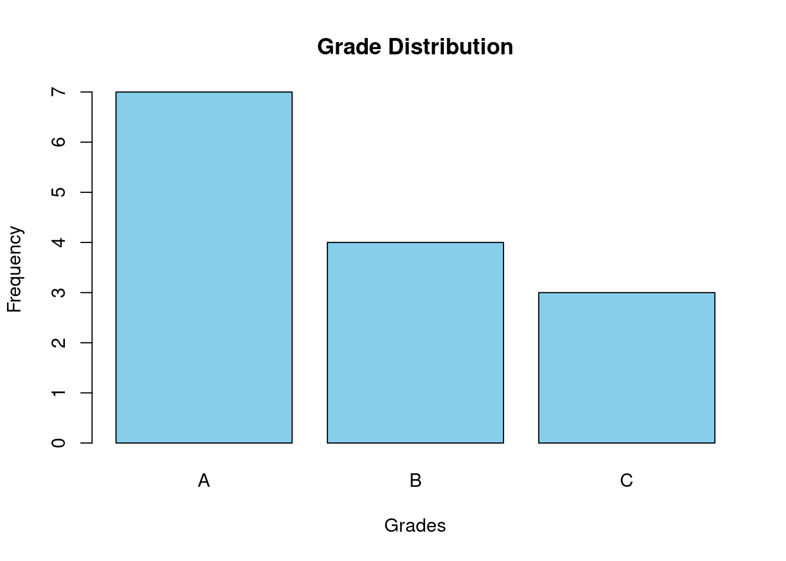
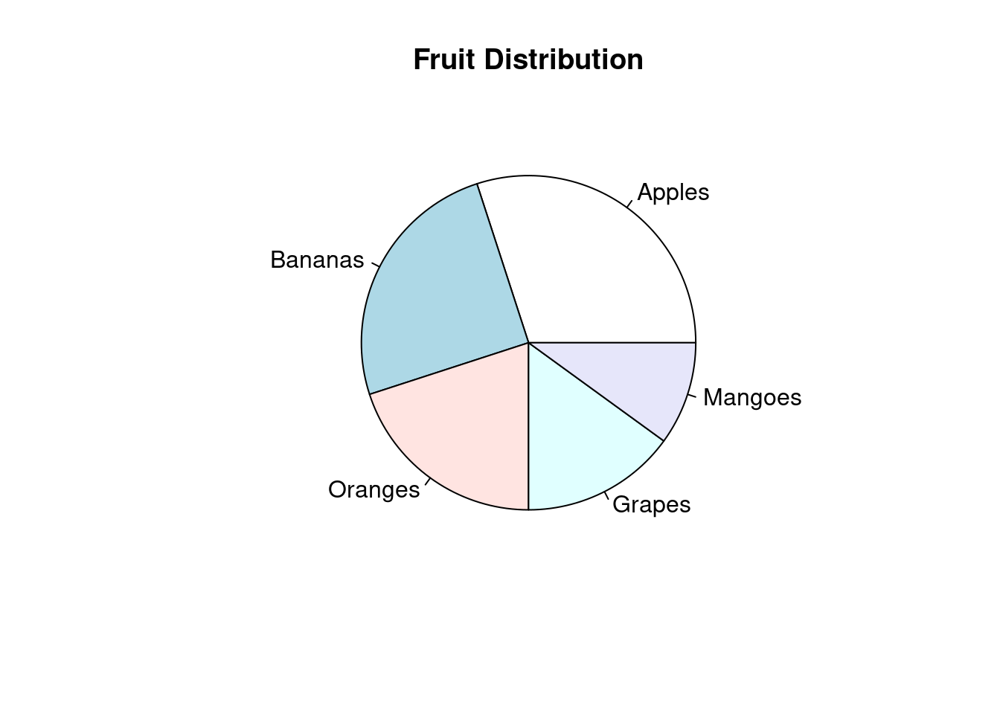

Chapter 2 Estadistica descriptiva
2.1 Ejercicio 1
EJEMPLO
Determinar la tabla de frecuencias y varios tipos de gráficos.
# Muestra
grades <- c("A", "B", "A", "C", "B", "A", "A", "C", "B", "A", "A", "A", "B", "C")
# Crear una tabla de frecuencias utilizando la función table()
freq_table <- table(grades)
# Mostrar la table de frecuencia
print(freq_table)## grades
## A B C
## 7 4 3# Creat gráfico de barras utilizando barplot()
barplot(freq_table, main = "Grade Distribution", xlab = "Grades", ylab = "Frequency", col = "skyblue")
# Muestra datos
fruits <- c("Apples", "Bananas", "Oranges", "Grapes", "Mangoes")
percentages <- c(30, 25, 20, 15, 10)
# Crear un gráfico circular utilizando pie()
pie(percentages, labels = fruits, main = "Fruit Distribution")